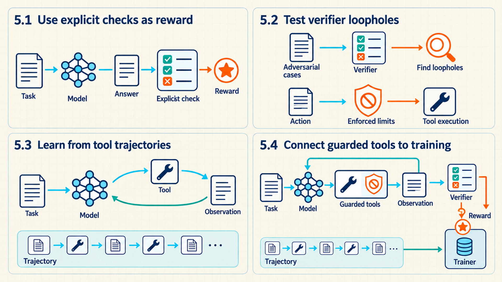

5 RL from tests and tool results
Automated checks make reward design part of the software that runs a task.
PPO and GRPO change the model using scores assigned to its attempts. Those scores need not come from a learned reward model. A coding task can run the proposed program against tests, and a mathematics task can compare a final answer with a known result. These checks can make many attempts affordable to score when their execution and validation cost is lower than human review, but that comparison must be measured for the project. Training is useful only when passing the checks reflects the task we actually want solved. A tool-using model adds another requirement: the training record must preserve the actions and returned results that led to success or failure.
- Reinforcement Learning with Verifiable Rewards (RLVR): Reinforcement learning in which a program or rule checks a generated result and supplies the reward. Tülu 3 supplies one concrete case: deterministic checks score sampled completions, and PPO uses the resulting rewards.1 Exact-answer matching and unit tests fit this check-based boundary. Extending the same idea to a whole tool task is this guide’s adaptation: the environment must define which final or intermediate states count as success. Automated checks reduce rating work only when they are cheaper to run and validate than collecting human judgments, so the project must measure that cost rather than assume a universal saving.
A test can supply a score without showing that the whole task was done safely. The four regions below connect reward checks, attempts to expose their weaknesses, recorded tool interactions, and guarded training.

In Sections 5.2 and 5.4, enforced limits constrain actions before or during tool execution. The resulting observation informs the model’s next action. A verifier supplies reward for training, while the trajectory records the ordered interaction. Reward does not replace execution restrictions.
5.1 Rewarding answers with explicit checks
Online training needs a reward for each sampled attempt. For qualities such as clarity, a person or learned preference model may be the appropriate judge. For a program’s return value or a required output format, an explicit test can give a more direct answer. The choice depends on which part of success can actually be checked.
RLVR changes how the reward is obtained, not the policy-update rule. DeepSeekMath’s GRPO setup can consume rule-based scores for grouped completions.2 The Tülu 3 report documents one open post-training recipe that applies deterministic checks to sampled responses and uses the resulting reward with PPO. It is a specific RLVR implementation, not evidence that every automated check represents its full task.3 Writing and testing the verifier is therefore part of reward design: a consistent check can still consistently reward the wrong solution.
JavaScript Object Notation (JSON) is a text format for structured records made from objects, arrays, strings, numbers, booleans, and null values. A schema validator can check JSON structure and field types, but not whether the content is factually correct.
The three common judges provide different kinds of feedback.
Human preference: A reviewer chooses the clearer answer. This signal is expensive and subjective, but can evaluate qualities that are difficult to formalize.
Learned reward model: A transformer predicts a preference score. It scales to fresh outputs, but a policy can exploit model errors. In Gao and colleagues’ synthetic proxy-versus-gold setup, further optimization of the proxy eventually reduced the gold-model score. That result demonstrates the risk under the tested setup, not a universal failure threshold.4
Verifier (RLVR): Tests pass, JSON output validates, or an answer matches ground truth. This form of reward can score many attempts and is less subjective, but a policy can exploit an incomplete specification.
The course lecture compares RLHF with RLVR on six properties. The comparison shows which kind of reward a project can obtain and what each kind leaves unchecked.
| Property | RLHF | RLVR |
|---|---|---|
| Reward source | A learned reward model predicts human preference. | A program checks the output against a known result. |
| Labeling cost | Human comparisons are needed to train the reward model. | No per-answer labels, but the checks must be written, tested, and maintained. |
| Reward quality | Approximate. Exploitable wherever the reward model is wrong. | Exact for the property tested. Silent about everything untested. |
| Suitable tasks | Open-ended quality, safety, and style. | Code, mathematics, structured output, and tool tasks with checkable end states. |
| Scaling limit | The labeling budget. | Compute for sampling and executing attempts. |
| Main risk | Exploitation of reward-model errors. | Exploitation of weak tests and specification gaps. |
Neither column removes the need for evaluation. RLVR replaces the cost of labels with the cost of writing reliable checks, and its exactness applies only to what those checks test.
RLVR does not eliminate reward hacking. Tülu 3, for example, reports overoptimization in its own RLVR experiments as KL divergence from the initial model increased, with task-specific exceptions.5
Weak test suite: A coding model can learn visible cases while failing hidden inputs.
Lucky final answer: A mathematics model can receive full outcome reward after an unsupported guess.
Schema shortcut: A tool agent can produce valid-looking structured output while skipping the required work.
Verifier design must close the loopholes that matter for deployment. Hidden cases, action rules, resource limits, and checked intermediate results are useful only when they represent real task requirements.
The trainer must convert verifier output into numbers used by the update. Suppose four sibling completions for one prompt receive binary check results \([1,0,1,0]\). Their mean is 0.5. Using the population standard deviation specified in Section 4.1 gives \(\sqrt{[(0.5)^2+(-0.5)^2+(0.5)^2+(-0.5)^2]/4}=0.5\). With \(\epsilon_{\mathrm{std}}=10^{-4}\), the denominator in Equation 4.1 remains \(\max(0.5,10^{-4})=0.5\), so the group advantages are \([1,-1,1,-1]\). This follows the group-relative normalization introduced with GRPO. The numbers here are derived course inputs, not reported results from the paper.6
For a compact continuation, let trainer re-scoring give one selected generated token from each sibling the illustrative current-to-old ratios \([1.10,0.90,1.20,0.80]\), with clip width 0.20. The clipping interval is therefore \([0.80,1.20]\): the first two ratios lie inside it, and the last two sit exactly on its bounds. Clipping changes none of these four values, so each selected term below is the ordinary ratio multiplied by its advantage. A real completion repeats its sibling advantage across all of its selected generated-token positions and then applies the configured token or sequence averaging rule.
| Sibling | Verifier reward | Group advantage | Ratio | Selected term |
|---|---|---|---|---|
| 1 | 1 | +1 | 1.10 | 1.10 |
| 2 | 0 | -1 | 0.90 | -0.90 |
| 3 | 1 | +1 | 1.20 | 1.20 |
| 4 | 0 | -1 | 0.80 | -0.80 |
The four displayed terms average to \((1.10-0.90+1.20-0.80)/4=0.15\). Group statistics turn binary scores into signed advantages. Policy ratios weight them. This trace covers one selected token per completion, not a full completion.
For coding, the course lecture contrasts the two training signals. SFT imitates example code, so it raises the probability of common patterns, style, and format. RL optimizes whether generated code passes its tests, so it can raise task success and pass@k (Section 6.2) on problems whose solutions differ from any example. The two combine: SFT supplies a starting policy that already writes runnable code, which matters for the problem below.
The mixed group above, with two passes and two failures, is the useful case. A binary test reward gives zero to every failing program. When a model rarely solves a task, most sampled attempts score zero. A group in which every attempt scores zero produces no GRPO advantage (Section 4.4.3). Training then spends generation and execution cost without learning from that group. The model must produce a success before a success can be reinforced. The lecture lists four mitigations, and each has a cost.
- Warm start with SFT: Begin RL from a checkpoint that already solves some tasks, so successes appear in sampled groups. This requires suitable demonstrations.
- Better prompts: State the required format, function signature, and constraints, so that failures come from the task rather than from misreading the request.
- More completions per prompt: A larger group raises the chance of a mix of passing and failing attempts when passes are rare. Every extra attempt must still be generated and executed.
- Reward shaping: Partial credit, such as the fraction of tests passed or a bonus for code that compiles, creates differences between failing attempts. Each added term is also a new target the policy can exploit. Section 5.3 works through a weighted example.
Example: group size and the chance of a usable group
Suppose each sampled attempt at one coding task passes independently with probability 0.05. With binary rewards, a usable within-group comparison needs at least one pass and one failure. Both an all-fail group and an all-pass group have zero reward variation, so neither supplies a group-relative advantage.
Calculation
- Group of 4: The chance of a mixed group is \(1-0.95^4-0.05^4\approx0.185\). The subtracted terms are the all-fail and all-pass cases.
- Group of 16: The same calculation gives \(1-0.95^{16}-0.05^{16}\approx0.560\).
Conclusion: Quadrupling the group size roughly triples the chance of a mixed comparison for this task, at four times the generation and execution cost. DAPO’s group filtering (Section 4.4.3) discards both kinds of uniform group, but it cannot create successes. A task with a pass rate near zero needs a stronger starting policy, clearer prompts, or shaped reward before group-based RL can learn from it.
5.2 Testing the verifier for loopholes
A program may pass the example test and fail on an empty input, run indefinitely, or read a file it was not allowed to access. These failures require different controls. Tests check the required result. Restrictions on execution limit what the program can do while obtaining it. Neither should be mistaken for the other.
A verifier must state what it can observe and which requirements remain outside its checks. A coding verifier normally combines several checks, each closing a different loophole.
Outcome check: Hidden unit tests validate return values, reducing overfitting to visible examples or lucky guesses.
Constraint check: The execution environment enforces an explicit policy for network, filesystem, and process access. A sandbox is an isolated environment configured to restrict those operations. An import-name check alone does not provide isolation. NIST’s container-security guide recommends explicit isolation, network segmentation, and resource controls, but it does not certify any particular generated-code runner.7
Resource limit: A timeout and memory cap constrain execution so the reward does not favor an impractically expensive solution.
Process check when needed: An intermediate tool action reaches a required checkpoint, giving denser credit when final-only reward is too weak.
The engineering recommendation in this guide is to construct adversarial trajectories before optimization that pass an incomplete verifier while violating the intended task. Accept the verifier only when those trajectories fail for the intended reason and held-out cases still represent the behavior required in deployment. This is a control-design recommendation, not an empirical claim that one adversarial set proves the verifier complete.
5.3 Learning through tool interactions
The checks above can score a completed answer. In a tool-use task, however, the model also receives information while working. A test runner may reveal the first failing assertion. The model can then edit the relevant function and run the tests again. The next action depends on the returned result, so the training example is a sequence of interactions rather than just a prompt and final answer.
- Agentic RL: Reinforcement learning over a sequence of model actions and environment results. The application assembles the model’s input from the user request, available action history, tool outputs, and any stored memory it includes. The environment may also contain state that the model cannot observe, such as hidden tests or files it has not read. WebGPT provides an early concrete example: a model received the current browser state, issued a command, and trained with an episode-level reward in a restricted browsing environment.8
After each policy action, the environment returns a result that becomes part of the next model input. Because that result changes the next decision, training records the full sequence rather than only the final answer.
The ordered record of these interactions is a trajectory. A final reward can train from a whole trajectory without a separate score for every action. Intermediate scores are optional: they can make useful progress easier to identify, but they can also reward a shortcut such as repeatedly passing an easy check. In either case, the application must enforce tool restrictions independently of the reward.

The same environment event has two different uses: its observation informs the next action, while a verifier can turn selected results into reward.
Agentic rewards can combine final task success with partial credit for intermediate checkpoints, using the process-supervision idea introduced for reasoning in Chapter 4. Lightman and colleagues distinguish outcome supervision from feedback on intermediate reasoning steps and found a process-supervision advantage on their tested MATH setup. That finding does not establish that every intermediate tool checkpoint is useful.9 The task defines which intermediate events receive partial credit. A coding environment can run tests, while an agent benchmark can validate a sequence of tool observations and actions. Execution restrictions still have to be enforced independently.
Credit assignment needs the trajectory, not only its last string. Store each state, action, observation, and checkpoint result in order. A final success reward can be attached to the terminal transition, while partial checkpoint rewards can be attached when the agent discovers the failure, produces a valid patch, or recovers from an error. The record makes those calculations possible, but does not identify the cause of success by itself. PPO can estimate different advantages at successive states. Applying GRPO’s completion-level comparison to tool trajectories is an extension of the method. The cited reasoning study does not test tool trajectories. If each complete trajectory receives one score, every generated token in that trajectory receives the same relative advantage, including tokens in unnecessary actions.10
For coding tasks, the fraction of hidden unit tests passed can supply partial outcome reward, while format checks and blocked-import checks test separate requirements. A container or a hosted isolated runner may be selected to implement an execution boundary, but the implementation category alone is not evidence that filesystem, network, process, time, and memory controls are configured completely.11 A tool call produces an observation that conditions the next action. End-task success can provide the final reward, while checked subgoals can add partial rewards when sparse feedback makes credit assignment too difficult.
Begin with a binary correctness baseline and add components only when a concrete failure needs them. A value such as \(-0.1\) for malformed output is an illustrative design choice, not a generally recommended penalty. First test whether simple correctness checks can be gamed. Only then add style or process terms whose effects can be measured separately.
Agentic RL changes each part of the ordinary LLM rollout.
State: Instead of only a prompt plus generated prefix, the state includes prompt, history, tool outputs, and retained memory.
Action: Instead of only the next token or a completion, the policy may choose a tool call, arguments, or a stop decision.
Observation: A normal completion often has no explicit mid-sequence environment result. An agent receives one after each tool action.
Reward: Instead of only completion quality, the task can score final success plus process and tool checks.
Example: a final test reward reaches earlier tool actions
A coding agent inspects a failure, writes a patch, then runs the full test suite. During this training attempt, the verifier assigns reward only when the final test passes. The question is how the earlier two actions can receive training credit although their immediate rewards are zero.
Inputs and measurement
For this action-level illustration, one transition is one complete tool request and its returned observation. The three recorded rewards are \(r_0=0\), \(r_1=0\), and \(r_2=1\). Before updating the critic, its forward passes on the saved states return \(V(s_0)=0.2\), \(V(s_1)=0.5\), and \(V(s_2)=0.6\). The terminal value is \(V(s_3)=0\). These are illustrative critic predictions, not scores assigned by a human to the individual actions.
Use the generalized advantage estimation (GAE) recursion from Section 3.3 with \(\gamma=1\) and \(\lambda=1\), so this short trace has neither discounting nor decay between residuals. GAE defines advantages as a discounted sum of temporal-difference residuals. The three-action values below are derived course inputs, and the paper’s experiments were continuous-control tasks rather than tool-using LLMs.12 Omit KL shaping and tool costs to isolate the final reward’s effect. Here \(t\) indexes tool actions rather than individual tokens.
Calculation
Step 1. Calculate each temporal-difference residual. The residual \(\delta_t\) is immediate reward plus the next state’s value, minus the current state’s value:
\[\delta_0=0+0.5-0.2=0.3,\qquad \delta_1=0+0.6-0.5=0.1,\qquad \delta_2=1+0-0.6=0.4.\]
Step 2. Accumulate advantages backward. Starting at the last action, use \(\hat A_t=\delta_t+\hat A_{t+1}\) and terminal advantage \(\hat A_3=0\):
\[\hat A_2=0.4,\qquad \hat A_1=0.1+0.4=0.5,\qquad \hat A_0=0.3+0.5=0.8.\]
Step 3. Recover the return targets. Adding each prediction back gives \(\hat A_0+V(s_0)=\hat A_1+V(s_1)=\hat A_2+V(s_2)=1\).
For a token-level LLM trainer, preserve the same ordered interaction but attach rewards and values at its defined token positions. Score only policy-generated tokens, masking tool observations from the policy loss. Tool requests spanning several tokens require that explicit alignment rather than copying these three action-level numbers blindly to the entire text.
Conclusion: The final reward produces positive advantage at all three decision states. PPO uses these fixed estimates with the stored action probabilities when it updates the policy. The larger first advantage means success exceeded the critic’s earlier expectation by more. It does not prove that inspecting the failure was the most important action. A redundant tool call can also inherit credit from later success.
The token record below makes the masking rule concrete. Positions are illustrative spans in one serialized trajectory. The attention mask says which tokens are real inputs. The policy-loss mask is narrower: it selects tokens generated by the policy, including generated tool-request spans, but excludes prompt text, returned tool observations, and padding.
| Serialized span | Positions | Attention mask | Policy-loss mask | Reward position |
|---|---|---|---|---|
| Prompt | 0–2 | 1 | 0 | none |
| Generated tool request | 3–5 | 1 | 1 | 5 if checkpoint reward |
| Returned tool observation | 6–8 | 1 | 0 | none |
| Generated final answer | 9–10 | 1 | 1 | 10 for terminal reward |
| Padding | 11–13 | 0 | 0 | none |
The first tool request at positions 3 through 5 is one action at the environment level but three selected actions at the token level. The returned observation at positions 6 through 8 becomes context for the later policy decision. It is not text the policy chose. A token-level implementation must document which generated-token position receives an action reward. This illustrative convention uses the last token of the action span and uses the same position when aligning values and returns. An action-level implementation may instead aggregate token log probabilities for the complete request and keep one value at each decision state. These are different granularities and must not be mixed silently.
A true terminal final answer sets the next-state value to zero. If collection stops because of a token, time, or infrastructure limit while the task could continue, mark the trajectory as truncated and bootstrap from a valid recorded next-state value when the algorithm’s convention permits it. Do not label that cutoff terminal merely to erase the bootstrap. Padding has attention, policy-loss, value-loss, and reward masks of zero.
A concrete failure check compares selected positions before calculating the loss. If positions 6 through 8 have policy mask 1, the trainer is teaching the model to imitate environment output. If positions 3 through 5 have policy mask 0, the tool request receives no policy gradient. If the final reward is shifted onto the observation token rather than the preceding generated action, the critic and actor can learn from different transitions. Print the token IDs, span roles, shifted targets, nonzero reward indices, terminal/truncation flags, and counts of selected tokens for several trajectories, then assert that policy-selected positions are a subset of nonpadding positions.
Intermediate checks change the rewards supplied to the return calculation. They can distinguish useful progress before the final test, but their weights also change which trajectories training favors.
Example: partial trajectory reward
During training, a coding agent attempts to repair one failing program. The task requires it to locate the failure, produce a valid patch, and pass the full training test suite. The verifier scores the recorded trajectory to decide how much reward this attempt contributes to the update.
Inputs and measurement
The task environment and verifier return boolean outcomes for discovery, patch validity, and end-to-end tests. In this illustrative attempt, all three checks pass. The task designer assigns weights 0.25, 0.25, and 0.50 to those checks, with each achievement counted at most once per attempt. These weights are choices in the scoring rule, not measurements made by the model.
Scale: The three values are task-defined reward weights, not probabilities. This scoring rule has a maximum of one point.
Calculation
\[0.25 + 0.25 + 0.50 = 1.00\]
Conclusion: The successful trajectory receives 1.00 reward. An attempt that finds the failure and produces a valid patch but still fails the full suite receives 0.50. But the weights also create a trade-off: a shortcut that triggers only the full-suite check also receives 0.50, tying genuine partial progress. That tie may expose a weak or cached end-state check rather than useful work. Repeatedly rediscovering the same failure adds no reward. Test component combinations on adversarial development tasks, ablate each reward term, and use a separate held-out evaluation set to judge the trained agent.
- Evaluate the trajectory: A higher final-answer score is not enough if it comes from unnecessary tool calls, an invalid shortcut, or brittle dependence on one environment. Keep held-out tasks and hidden checks separate from the training reward.
Agent evaluation records six complementary results.
Task success: Whether the environment reaches the required final state.
Verifier pass rate: How often explicit outcome and constraint checks pass.
Tool calls: How many external actions the policy consumes per task.
Wall-clock cost: Elapsed time and compute or service cost for the trajectory.
Unsafe actions: Attempts that violate allowed-action or resource rules.
Recovery: Whether the policy detects and corrects an intermediate failure.
5.4 Connecting tools, checks, and training
The trajectory separates what the model saw, what it requested, what the tool returned, and how the request was scored. The software must preserve those distinctions. A blocked action still needs a recorded result, whereas an allowed action must run under enforced limits before its result is used for training.
Four software components divide the work for a tool-using update.
Test runner: A system such as
pytestchecks task outcomes.Sandbox: Resource, import, and action rules limit what a tool call may do.
Agent environment: Runs the action and returns the next observation.
Trainer: TRL or a custom PyTorch loop consumes the scalar reward and updates the policy. Project code must still implement and test the verifier and environment.
This is interface pseudocode, not a runnable sandbox implementation. It assumes that environment.reset(task) has created an episode record with the first model input and success_credited=False. The function receives that record, a policy, an environment, and a verifier with the methods shown. The action is a tool request. The observation is a structured execution or blocked-action result. The returned transition contains the observation, next model input, scalar reward, terminal and truncation flags, and the reason for either kind of episode end. The real environment must implement isolation, timeouts, memory limits, and an interaction limit before this pattern is used with generated code.
This example uses a binary first-terminal-success reward. Passing the training tests in a nonterminal state is not enough: the environment must also report the terminal reason "success", all required checks must pass, and the episode must not have credited success before. The first such event receives one point and sets episode.success_credited=True. Reprocessing the same terminal event therefore receives zero. The collector should still stop after a terminal or truncated transition. The partial-credit rule in the preceding example is a separate scoring choice. A task designer chooses one rule and records it with the run.
An allowed call to environment.step updates the environment’s stored state, which may include files and execution records. environment.state is that stored state after the call. The returned observation is the result exposed to the model; environment.observe combines it with the available history to construct next_state. A blocked call leaves files and execution state unchanged but supplies a blocked-action observation and consumes one attempt from the interaction limit. limits_respected reads execution and interaction records to confirm whether the run stayed within all enforced limits. terminal_reason reports a natural episode end such as "success" or "failure". If there is no natural end, truncation_reason can report a token, time, step, or infrastructure cutoff. If a limit is exhausted without a more specific reason, the interface returns the fallback reason "resource_limit" and marks the transition as truncated.
Code example 5.1: A guarded tool step produces the next state and training reward.
# Guard one action and return a complete training transition.
def guarded_step(episode, policy, environment, verifier):
state = episode.policy_state
action = policy.act(state)
safe = verifier.allowed_action(state, action)
limits = environment.enforced_limits(episode.task)
if safe:
observation = environment.step(
action, enforced_limits=limits
)
else:
observation = environment.blocked_action_result(
action, enforced_limits=limits
)
tests_ok = (
safe and verifier.training_tests(environment.state)
)
within_cost = environment.limits_respected()
terminal_reason = environment.terminal_reason()
terminated = terminal_reason is not None
truncation_reason = (
None if terminated else environment.truncation_reason()
)
if not terminated and not within_cost:
truncation_reason = truncation_reason or "resource_limit"
truncated = truncation_reason is not None
first_success = (
terminated
and terminal_reason == "success"
and tests_ok
and safe
and within_cost
and not episode.success_credited
)
reward = float(first_success)
episode.success_credited = (
episode.success_credited or first_success
)
next_state = environment.observe(observation)
episode.policy_state = next_state
reason = terminal_reason if terminated else truncation_reason
return (
observation, next_state, reward,
terminated, truncated, reason,
)next_state remains separate from the scalar reward because the policy consumes the first value and the trainer consumes the second. The trainer uses terminated, truncated, and reason to apply the bootstrap convention in Section 5.3 and to retain why collection stopped.
For an illustrative allowed patch that reaches terminal success, passes the training tests within the limits, and has not been credited before, reward is 1.0. An allowed intermediate state can pass the same tests yet receive 0.0 because it is not terminal. If the action is blocked, safe is false, the unchanged task state is not tested again, and the reward is 0.0. next_state still includes the blocked-action result so the policy can choose another action. Repeated blocked attempts consume the interaction limit and eventually return a truncated transition. These are expected behaviors of the interface, not recorded executions of the undefined environment and verifier helpers.
State and action:
statecontains the prompt, prior actions, and returned observations available to the policy;actioncan be a token sequence or a tool request.Action guard:
allowed_actionchecks the request before execution. A negative reward after an unsafe action would be too late to prevent the action.Environment result: The sandbox enforces resource limits while
environment.stepruns;observationis the resulting tool output or a structured blocked-action result.Verifier rules:
training_testsand the execution records supply reward components. Tests reused for reward are training tests even when their contents are private.Training signal:
rewardis what an RL trainer consumes, whereasnext_stateis what the policy sees next. The episode record keeps the first-success credit flag outside the model input. A real evaluator may combine checks with partial credit instead of returning only zero or one, but the scoring rule must be stated.Training-verifier tests and held-out tests: Private training-verifier tests may hide their contents from the policy, but repeated reward feedback can still leak information about them. Reserve a separate held-out test set that never produces training reward and use it only for checkpoint acceptance.
Execution guard: Safety and resource rules must be enforced before or during tool execution. Post-hoc scoring is useful for learning and diagnosis but cannot undo an unsafe action or exceeded resource limit. This recommendation is consistent with NIST’s container guidance on isolation, communication boundaries, and resource limits, but the guidance is not evidence that a container is correctly configured.13
Soft reward weights express preferences among allowed trajectories. They must not replace independently enforced constraints: prohibited actions, network and filesystem policy, timeout, memory cap, and allowed tool arguments remain guards even if a high task reward would compensate for their penalty numerically.
A production trajectory record preserves the facts needed to reproduce the score and diagnose a failure.
State identifier: Link every model input to the task version, prior action history, retained memory, and environment snapshot.
Action record: Store the generated tool name, validated arguments, policy log probability, and stop decision before execution.
Observation record: Capture structured output, standard output, standard error, exit status, timeout, and resource use without treating them as reward.
Verifier record: Save each check result and reward component separately so a final scalar can be reconstructed.
Environment version: Record sandbox image, dependency versions, permissions, network policy, and tool implementation.
Replay result: Re-run selected traces and held-out tasks after training to test determinism, recovery, safety, latency, and cost.
The saved agent then needs a separate evaluation. Run complete episodes with fixed environment and verifier versions, using the following checks to decide whether it is suitable for deployment.
Action safety: Attempt prohibited, malformed, and ambiguous tool calls and confirm that pre-execution guards block them.
Recovery: Inject tool errors, timeouts, empty results, and stale observations. Check whether the policy recovers without repeating harmful actions.
Task completion: Use held-out tasks that never produced reward and inspect both final success and the sequence of intermediate actions.
Cost and latency: Report tool calls, generated tokens, wall-clock time, retries, and resource-limit failures per completed task.
Reward ablation: Remove or perturb each reward component and verify that success does not depend on an unintended shortcut.
These checks establish what a training score can support and what still needs independent evidence. The final chapter uses that distinction to choose a training method and compare its saved models on the behavior required in use.
Lambert, N., Morrison, J., Pyatkin, V., et al. (2024). Tülu 3: Pushing Frontiers in Open Language Model Post-Training (arXiv:2411.15124, v5). Source. Link checked 2026-09-16. Sections 6 and 6.2 define RLVR with deterministic verification and PPO; Section 6.2.1 and Appendix B.4 report overoptimization in this recipe. Material limit: one model family, training recipe, and task suite, not proof that arbitrary verifiers match deployment goals.↩︎
Shao, Z., et al. (2024). DeepSeekMath: Pushing the Limits of Mathematical Reasoning in Open Language Models (arXiv:2402.03300). Source. Link checked 2026-09-16. Sections 4.1.1 and 4.1.2 define GRPO’s group-relative advantage and outcome-level reward; Section 5.2.1 distinguishes rule and model rewards. Material limit: mathematical reasoning with the paper’s models and reward setups.↩︎
Lambert, N., Morrison, J., Pyatkin, V., et al. (2024). Tülu 3: Pushing Frontiers in Open Language Model Post-Training (arXiv:2411.15124, v5). Source. Link checked 2026-09-16. Sections 6 and 6.2 define RLVR with deterministic verification and PPO; Section 6.2.1 and Appendix B.4 report overoptimization in this recipe. Material limit: one model family, training recipe, and task suite, not proof that arbitrary verifiers match deployment goals.↩︎
Gao, L., Schulman, J., & Hilton, J. (2023). Scaling laws for reward model overoptimization. Proceedings of the 40th International Conference on Machine Learning, PMLR 202, 10835-10866. Source. Link checked 2026-09-16. Abstract and Sections 2-4 measure proxy-reward overoptimization under reinforcement learning and best-of-n sampling. Material limit: a synthetic gold-reward-model setup, not direct human judgments or deterministic verifiers.↩︎
Lambert, N., Morrison, J., Pyatkin, V., et al. (2024). Tülu 3: Pushing Frontiers in Open Language Model Post-Training (arXiv:2411.15124, v5). Source. Link checked 2026-09-16. Sections 6 and 6.2 define RLVR with deterministic verification and PPO; Section 6.2.1 and Appendix B.4 report overoptimization in this recipe. Material limit: one model family, training recipe, and task suite, not proof that arbitrary verifiers match deployment goals.↩︎
Shao, Z., et al. (2024). DeepSeekMath: Pushing the Limits of Mathematical Reasoning in Open Language Models (arXiv:2402.03300). Source. Link checked 2026-09-16. Sections 4.1.1 and 4.1.2 define GRPO’s group-relative advantage and outcome-level reward; Section 5.2.1 distinguishes rule and model rewards. Material limit: mathematical reasoning with the paper’s models and reward setups.↩︎
Souppaya, M., Morello, J., & Scarfone, K. (2017). Application Container Security Guide (NIST SP 800-190). National Institute of Standards and Technology. Source. DOI: 10.6028/NIST.SP.800-190. Link checked 2026-09-16. Sections 2.3, 4.4, and 4.5 discuss isolation, network segmentation, access control, and resource management. Material limit: security guidance for application containers, not experimental proof of a particular sandbox or an LLM-agent safety standard.↩︎
Nakano, R., Hilton, J., Balaji, S., et al. (2021). WebGPT: Browser-assisted question-answering with human feedback (arXiv:2112.09332). Source. Link checked 2026-09-16. Sections 2 and 3 describe browser state, model commands, environment transitions, PPO, and an episode-level reward. Material limit: a read-oriented browser with a restricted action set; the paper does not establish the safety or effectiveness of general code and tool agents.↩︎
Lightman, H., et al. (2024). Let’s verify step by step. International Conference on Learning Representations. Source. Link checked 2026-09-16. Sections 2.5-2.6 and 4.1 compare outcome- and process-supervised reward models; Section 6.1 discusses credit assignment. Material limit: step-level human labels and best-of-N selection on MATH, not general tool trajectories or proof that partial rewards always help RL.↩︎
Shao, Z., et al. (2024). DeepSeekMath: Pushing the Limits of Mathematical Reasoning in Open Language Models (arXiv:2402.03300). Source. Link checked 2026-09-16. Sections 4.1.1 and 4.1.2 define GRPO’s group-relative advantage and outcome-level reward; Section 5.2.1 distinguishes rule and model rewards. Material limit: mathematical reasoning with the paper’s models and reward setups.↩︎
Souppaya, M., Morello, J., & Scarfone, K. (2017). Application Container Security Guide (NIST SP 800-190). National Institute of Standards and Technology. Source. DOI: 10.6028/NIST.SP.800-190. Link checked 2026-09-16. Sections 2.3, 4.4, and 4.5 discuss isolation, network segmentation, access control, and resource management. Material limit: security guidance for application containers, not experimental proof of a particular sandbox or an LLM-agent safety standard.↩︎
Schulman, J., Moritz, P., Levine, S., Jordan, M. I., & Abbeel, P. (2016). High-dimensional continuous control using generalized advantage estimation. International Conference on Learning Representations. Source. Link checked 2026-09-16. Section 3, especially Equations 16 and 19, defines GAE as a discounted sum of temporal-difference residuals. Material limit: the derivation and experiments concern policy gradients and continuous-control tasks; this guide adapts the recursion to an illustrative tool-action trace.↩︎
Souppaya, M., Morello, J., & Scarfone, K. (2017). Application Container Security Guide (NIST SP 800-190). National Institute of Standards and Technology. Source. DOI: 10.6028/NIST.SP.800-190. Link checked 2026-09-16. Sections 2.3, 4.4, and 4.5 discuss isolation, network segmentation, access control, and resource management. Material limit: security guidance for application containers, not experimental proof of a particular sandbox or an LLM-agent safety standard.↩︎